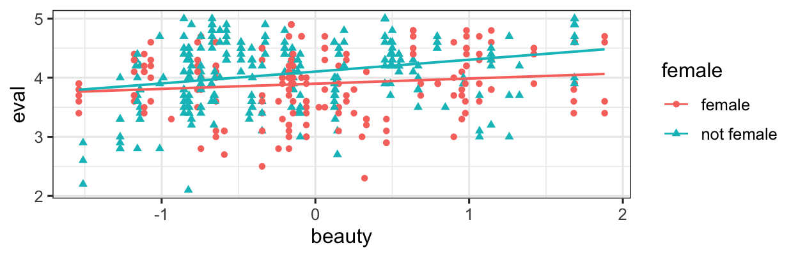
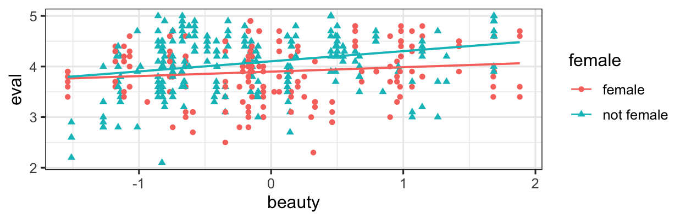
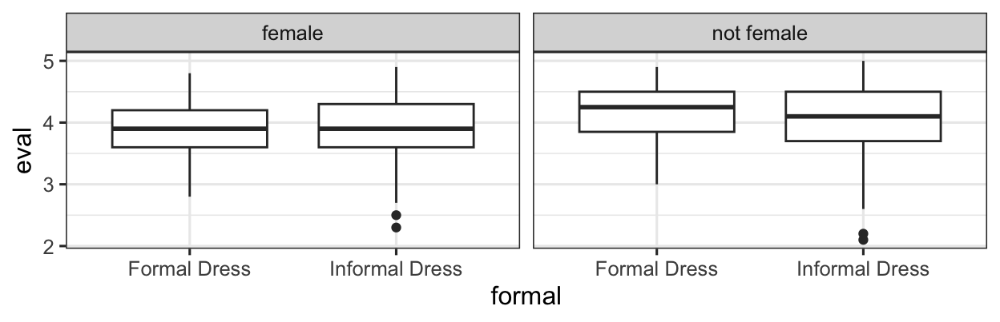

gf_point(eval ~ beauty, color = ~female, shape = ~female, data = teach_beauty) |>
gf_lm()
Two predictors interact when you need to know values of both in order to make an accurate prediction of the response variable value.
Predictors can interact in any type of regression model (so this chapter could really be placed almost anywhere).
gf_point(eval ~ beauty, color = ~female, shape = ~female, data = teach_beauty) |>
gf_lm()
Eval may go up as beauty increases, but the slope of the relationship is different for females and non-females. This is an interaction between beauty and female.
gf_boxplot(eval ~ formal | female, data = teach_beauty)
Perhaps Informal Dress affects eval scores, but really only for non-females – for females, formal dress doesn’t make a difference either way.
The effect of formal dress is different depending on the value of female. This is an interaction between formal and female.
Yes, these are possible, but very hard to visualize and conceptualize. Basically, it would mean that the slope of the line for one predictor changes gradually as the value of a second variable changes.
If you want to include an interaction term in a model in R, use a * rather than a + between the predictors that (may) interact. For example, based on our exploration above, we might try:
beauty_mod <- lm(eval ~ beauty*female +
formal*female,
data = teach_beauty,
na.action = 'na.fail')
summary(beauty_mod)
Call:
lm(formula = eval ~ beauty * female + formal * female, data = teach_beauty,
na.action = "na.fail")
Residuals:
Min 1Q Median 3Q Max
-1.83418 -0.36763 0.04966 0.39789 1.07161
Coefficients:
Estimate Std. Error t value Pr(>|t|)
(Intercept) 3.84839 0.10813 35.591 <2e-16 ***
beauty 0.09021 0.04744 1.902 0.0578 .
femalenot female 0.27615 0.13130 2.103 0.0360 *
formalInformal Dress 0.05751 0.11574 0.497 0.6195
beauty:femalenot female 0.10841 0.06452 1.680 0.0936 .
femalenot female:formalInformal Dress -0.08378 0.14276 -0.587 0.5576
---
Signif. codes: 0 '***' 0.001 '**' 0.01 '*' 0.05 '.' 0.1 ' ' 1
Residual standard error: 0.5371 on 457 degrees of freedom
Multiple R-squared: 0.07326, Adjusted R-squared: 0.06312
F-statistic: 7.226 on 5 and 457 DF, p-value: 1.587e-06Notice the additional indicator variables in the coefficient table/model equation. Now we need to adjust the effects of the beauty predictor depending on the values of formal and female, which interact with it.
We can use IC-based model selection to determine whether including these interactions in a model is important or not.
library(MuMIn)
dredge(beauty_mod, rank = 'AIC')Global model call: lm(formula = eval ~ beauty * female + formal * female, data = teach_beauty,
na.action = "na.fail")
---
Model selection table
(Int) bty fml frm bty:fml fml:frm df logLik AIC delta weight
12 3.899 0.08762 + + 5 -366.309 742.6 0.00 0.414
4 3.897 0.14860 + 4 -367.868 743.7 1.12 0.236
16 3.896 0.08773 + + + 6 -366.308 744.6 2.00 0.152
8 3.897 0.14860 + + 5 -367.868 745.7 3.12 0.087
32 3.848 0.09021 + + + + 7 -366.134 746.3 3.65 0.067
24 3.833 0.14880 + + + 6 -367.560 747.1 4.50 0.044
2 4.010 0.13300 3 -375.323 756.6 14.03 0.000
6 4.032 0.13170 + 4 -375.249 758.5 15.88 0.000
3 3.901 + 3 -378.503 763.0 20.39 0.000
7 3.932 + + 4 -378.367 764.7 22.12 0.000
23 3.872 + + + 5 -378.103 766.2 23.59 0.000
1 3.998 2 -383.747 771.5 28.88 0.000
5 4.044 + 3 -383.431 772.9 30.24 0.000
Models ranked by AIC(x) In the case of the particular model we fitted, the “best” model starting from this full model is actually one without interactions. If you want to explore the dataset further, you will find that actually a model where age, beauty AND female interact fits much better…
If you include an interaction in a regression model, you must also include the corresponding “fixed effects” – this means if you have an indicator variable/slope term for an interaction in your model, you must also have the indicator variables/slopes corresponding to the individual predictors. Our fitting functions (lm(), glm(), glmmTMB(), etc.) are smart enough to ensure this for you. So is dredge(). (It would take effort to mess this up in R.)